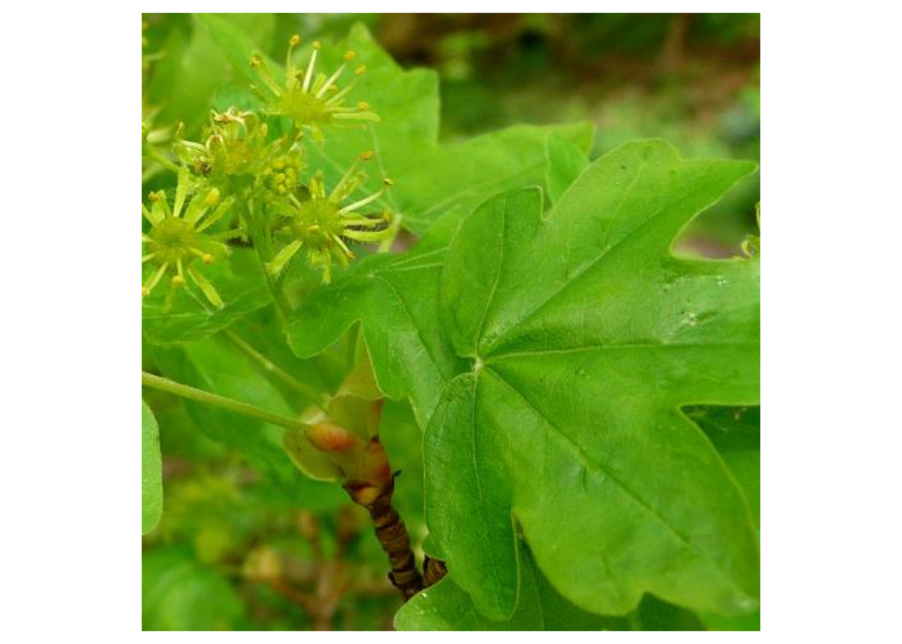
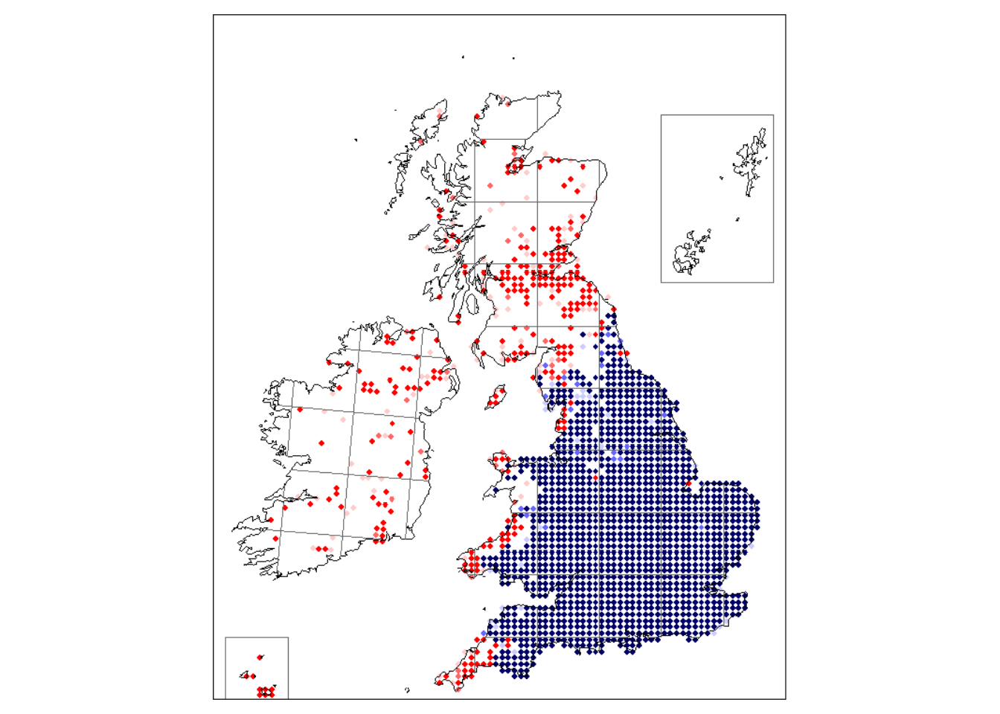
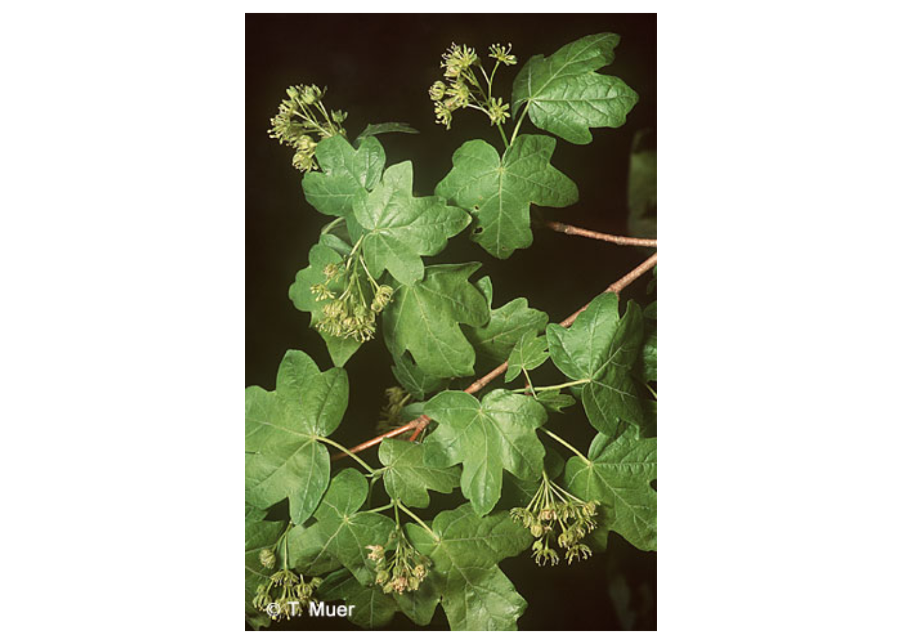
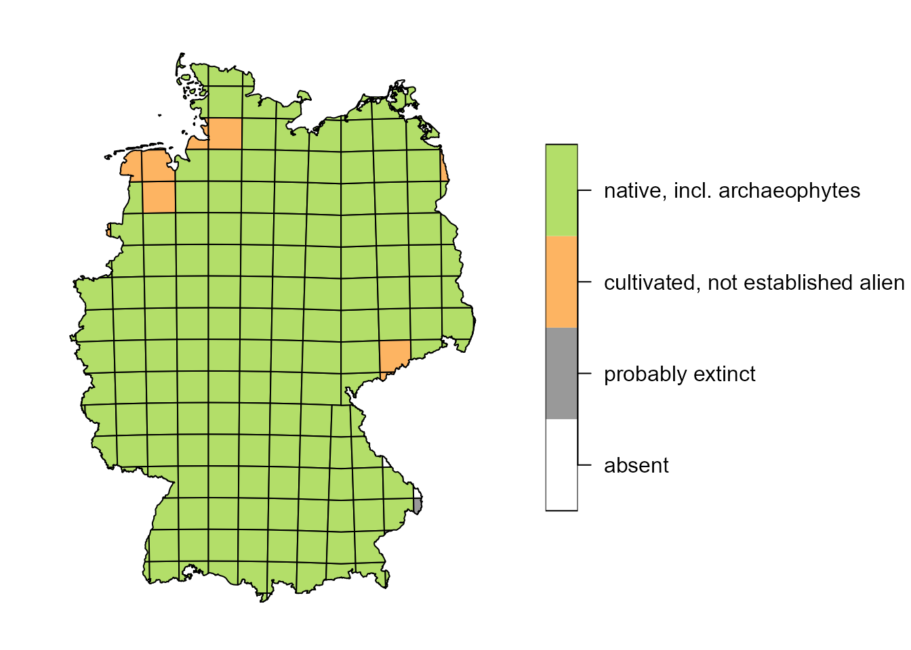
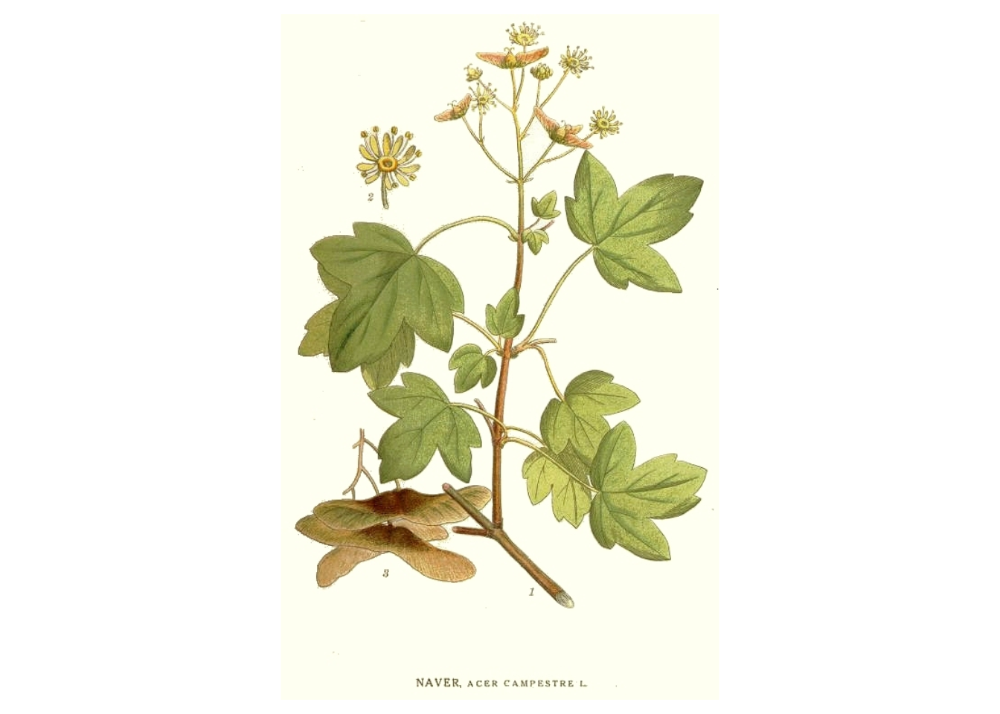

BotanizeR_functions.RmdBotanizeR
BotanizeR is an R-package with Shiny app designed to help botany students and other people interested in plants to learn and distinguish plant diagnostic characters, memorize plant species, and train their identification skills. Students can browse a species list, images, plant characteristics, habitat descriptions and distribution information or play a quiz where images of a random species are shown and students have to guess the correct species. BotanizeR is highly flexible allowing lecturers to define their own species lists and to provide images and further useful information, or choose from linked online content from selected botanical online resources. A Quiz and Species overview pages can be made available via the package’s Shiny application or played within R directly.
library(devtools)
install_github("https://github.com/patrickweigelt/BotanizeR")
library(BotanizeR)The BotanizeR R package includes functions to collect species level information from defined reources, to play the BotanizeR quiz, to prepare content for the quiz (batch resizing images, creating a local species list) and for running the BotanizeR Shiny app.
BotanizeR_species is an example dataset comprising a species list containing the relevant information to run BotanizeR_quiz or the BotanizeR Shiny app for 5852 vascular plant species from FloraWeb and the Online Atlas of the British Irish flora.
data(BotanizeR_species)
BotanizeR_species[c(1:4),
c("NAMNR", # FloraWeb ID
"TAXONNAME","SPECIES","GENUS", # Names to display and guess
"UK_Ireland", "Germany", # Columns to make subsets
"COUNT", "SCORE", "ATTEMPTS", "INCLUDE", # Quiz controls
"ownhint_English_name", "ownhint_Description", # Own hints
"imagelink_1", "imagelink_2")] # Own image links## NAMNR TAXONNAME SPECIES GENUS UK_Ireland
## 1 1 Abies alba Mill. Abies alba Abies 1
## 2 10001 Abies grandis (D. Don) Lindl. Abies grandis Abies 1
## 3 10004 Abies nordmanniana (Steven) Spach Abies nordmanniana Abies 1
## 4 10003 Abies procera Rehder Abies procera Abies 1
## Germany COUNT SCORE ATTEMPTS INCLUDE ownhint_English_name ownhint_Description
## 1 1 0 0 0 1 European Silver-fir
## 2 1 0 0 0 1 Giant Fir
## 3 1 0 0 0 1 Caucasian Fir
## 4 1 0 0 0 1 Noble Fir
## imagelink_1 imagelink_2
## 1
## 2
## 3
## 4BotanizeR_getlocallist() uses longitude and latitude coordinates and a defined buffer radius to retrieve a plant species list from GBIF and formats it for use in BotanizeR_quiz or the BotanizeR Shiny app. If a backbone_list is supplied, it will be subset for the species found in GBIF and returned.
# Subset the species list for species occurring in Cairngorms National Park
BotanizeR_Cairngorms <-
BotanizeR_getlocallist(long = -3.5966, lat = 57.0877,
radius = 0.5, taxonKey = 7707728,
limit = 500, backbone_list = BotanizeR_species)
nrow(BotanizeR_Cairngorms)## [1] 186
# Create a new species list for the Island of Bornholm, Denmark
BotanizeR_Bornholm <-
BotanizeR_getlocallist(long = 14.9184, lat = 55.1273,
radius = 0.5, taxonKey = 7707728,
limit = 500, backbone_list = NA)
nrow(BotanizeR_Bornholm)## [1] 198BotanizeR_imageresize() batch resizes all jpg and png images found in defined folders for plotting in BotanizeR_quiz() or the BotanizeR Shiny app.
You define the new width of the images and optionally a maximum height which shall not be exceeded. Aspect ratios are maintained. BotanizeR_quiz() and the BotanizeR Shiny app can both resize images on the fly, however, to reduce traffic and loading time, it makes sense to reduce the size of large images in advance using BotanizeR_imageresize().
## Not run:
BotanizeR_imageresize(
image_folders = c("inst/WWW/images_1", # define 1 ore more folders
"inst/WWW/images_2"), # with images to resize
image_width = 560, max_height = 700, # new maximum extent
quality = 1, int_type = 5) # quality and interpolation
# type as in imager::resize()
## End(Not run)BotanizeR_collect() Collects information from online resources like FloraWeb (images, map and species descriptions) and/or the Online Atlas of the British Irish flora as well as from user defined image folders and columns in the species_list data.frame and formats them for showing them as hints in BotanizeR_quiz() or the BotanizeR Shiny app. This function does not have to be run standalone outside the quiz, but running it exemplifies how BotanizeR_quiz() and the BotanizeR Shiny app retrieve the information to be shown and how own information needs to be supplied via image folders or colunms of the species_list data.frame.
# Select Acer campestre as example species
species_row = BotanizeR_species[which(BotanizeR_species$SPECIES ==
"Acer campestre"),]
# Load hints: only UK plant atlas image(s) + hints + map
hints <- BotanizeR_collect(species_row, image_ukplantatlas = TRUE,
hints_ukplantatlas = c("mapuk", "familyuk",
"ecology", "statusuk",
"trends", "perennation",
"lifeform", "woodiness",
"clonality"))
par(mar = rep(0.5, 4), oma = rep(0, 4))
plot(hints$image[[2]], axes = FALSE)
plot(hints$mapuk)
hints$statusuk## [1] "Status: Native"
hints$clonality## [1] "Clonality: Little or no vegetative spread"
# Load hints: only FloraWeb image(s) + hints + map
hints <- BotanizeR_collect(species_row, image_floraweb = TRUE,
hints_floraweb = c("map", "description",
"status", "habitat",
"family", "German name"))
par(mar = rep(0.5, 4), oma = rep(0, 4))
plot(hints$image[[1]], axes = FALSE)

hints$family## [1] "Familienzugehörigkeit: Aceraceae, Ahorngewächse"
# Load hints: only images from custom image links + custom hints
hints <- BotanizeR_collect(species_row, image_floraweb = FALSE,
hints_custom = c("ownhint_English_name",
"ownhint_Description",
"ownhint_Distribution"),
imagelinks_custom = c("imagelink_1",
"imagelink_2"))
par(mar = rep(0.5, 4), oma = rep(0, 4))
plot(hints$image[[2]], axes = FALSE)
hints$ownhint_English_name## [1] "English name: Field Maple"
# Load hints: only returning image links instead of actual images
hints <- BotanizeR_collect(species_row, image_floraweb = TRUE,
image_ukplantatlas = TRUE,
imagelinks_custom = c("imagelink_1",
"imagelink_2"),
hints_ukplantatlas = c("mapuk", "familyuk"),
only_links = TRUE)
hints$images[[1]]## [1] "https://www.floraweb.de/bilder/arten/1925.jpg"
# To load images from your local computer, specify an image folder with
# pictures included. File names need to include the species names.
## Not run:
hints <- BotanizeR_collect(species_row,
image_folders = c("images/Asteraceae_Britain",
"images/Trees"))
## End(Not run)BotanizeR_quiz() runs the console version of the BotanizeR quiz. It navigates randomly through a species_list, shows defined pictures and descriptions and other hints from BotanizeR_collect() and let’s you guess the species name. The Number of tries and attempts are used to calculate scores that will be used to update probabilities for the random sampling of subsequent species. The better you know a species the less likely it will be shown again.
After running the main function BotanizeR_quiz() you need to click into the console to type the species names in there. If you have no clou, press enter and the next hint will appear (you have max_attempts tries). If you type the name slightly wrong the function will tell you. If the genus is correct it will also tell you. It shows several photos if available. If you want to skip a species write ‘skip’. If you want to cancel the quiz write ‘exit’. Don’t hit Esc if you want to save your progress.
An example for species from Sussex, UK based on the Online Atlas of the British Irish flora:
# Subset for about 700 species known from Sussex, UK
BotanizeR_Sussex <-
BotanizeR_species[which(BotanizeR_species$UK_Ireland_Sussex==1), ]
# Type in species name, or press enter for next hint or type 'skip' and
# press enter for next species or type 'exit' to end quiz and save results
BotanizeR_UK_practiced <-
BotanizeR_quiz(species_list = BotanizeR_example,
image_floraweb = FALSE, image_ukplantatlas = TRUE,
hints_ukplantatlas = c('mapuk', 'familyuk', 'ecology',
'statusuk', 'trends', 'perennation',
'lifeform', 'woodiness',
'clonality'),
hints_floraweb = NULL,
case_sensitive = FALSE)An example for species from Göttingen, Germany based on FloraWeb:
# Subset for about 300 species students in Goettingen, Germany, learn
BotanizeR_Germany <-
BotanizeR_species[which(BotanizeR_species$Germany_summer==1 |
BotanizeR_species$Germany_BioDiv==1), ]
# Type in species name, or press enter for next hint or type "skip" and
# press enter for next species or type "exit" to end quiz and save results
BotanizeR_Germany_practiced <-
BotanizeR_quiz(species_list = BotanizeR_Germany,
hints_floraweb = c("description", "status",
"habitat","family","German name"),
case_sensitive = FALSE)
# If you want to include distribution maps as hints add "map" to hints;
# This increases the download times a bit
BotanizeR_Germany_practiced <-
BotanizeR_quiz(species_list = BotanizeR_Germany,
hints_floraweb = c("map", "description", "status",
"habitat", "family", "German name"),
case_sensitive = FALSE)If you want to keep track of your progress, you can save the species list with updated scores locally and load it again in the next session:
## Not run:
# Saving results from above
write.csv(BotanizeR_Germany_practiced,
"BotanizeR_Germany_practiced.csv", row.names = FALSE)
# Loading previously saved pratcicing results
BotanizeR_Germany_practiced <- read.csv("BotanizeR_Germany_practiced.csv")
# Practicing
BotanizeR_Germany_practiced <-
BotanizeR_quiz(species_list = BotanizeR_Germany_practiced,
hints_floraweb = c("description", "status",
"habitat","family","German name"),
case_sensitive = FALSE)
# Saving results again
write.csv(BotanizeR_Germany_practiced, "BotanizeR_Germany_practiced.csv",
row.names = FALSE)
## End(Not run)```You can add own species descriptions or other hints as well is link to additional online images into additional columns of the species list data.frame. Alternatively you can specify a folder with images on your local computer. Image file names need to include species names.
# example for three species with custom hints and images from their Wikipedia page
BotanizeR_species_custom <- BotanizeR_species[
which(BotanizeR_Germany$species %in% c("Acer campestre",
"Erica carnea",
"Melampyrum nemorosum")),]
custom_species_trained <-
BotanizeR_quiz(species_list = BotanizeR_species_custom,
image_floraweb = TRUE, hints_floraweb = NULL,
hints_custom = c("ownhint_Description","ownhint_Distribution"),
imagelinks_custom = c("imagelink_1", "imagelink_2"),
image_folders = NULL, case_sensitive = FALSE)The most convenient way to play the BotanizeR quiz and to study selected plant species based on images and descriptions is the BotanizeR Shiny app. When the BotanizeR R package is installed, you can start the Shiny application using the function BotanizeR_shiny().
Alternatively, you can clone the BotanizeR GitHub repository (https://github.com/patrickweigelt/BotanizeR) and run the shiny app from RStudio. This option offers most flexibility for modifying the app. For teaching purposes the Shiny app would ideally be set up on a shiny server which students can visit online. A comprehensive example instance of BotanizeR showcasing all functionality can be found at https://gift.uni-goettingen.de/shiny/BotanizeR/
Two more tutorials, one on how to use the Shiny app and one on how to set it up can be found here:
Bundesamt für Naturschutz (BfN): http://www.floraweb.de
Image authors: https://www.floraweb.de/ueberfloraweb/bildautoren.html
Online Atlas of the British and Irish flora: https://www.brc.ac.uk/plantatlas/
Image authors: https://www.brc.ac.uk/plantatlas/content/photos